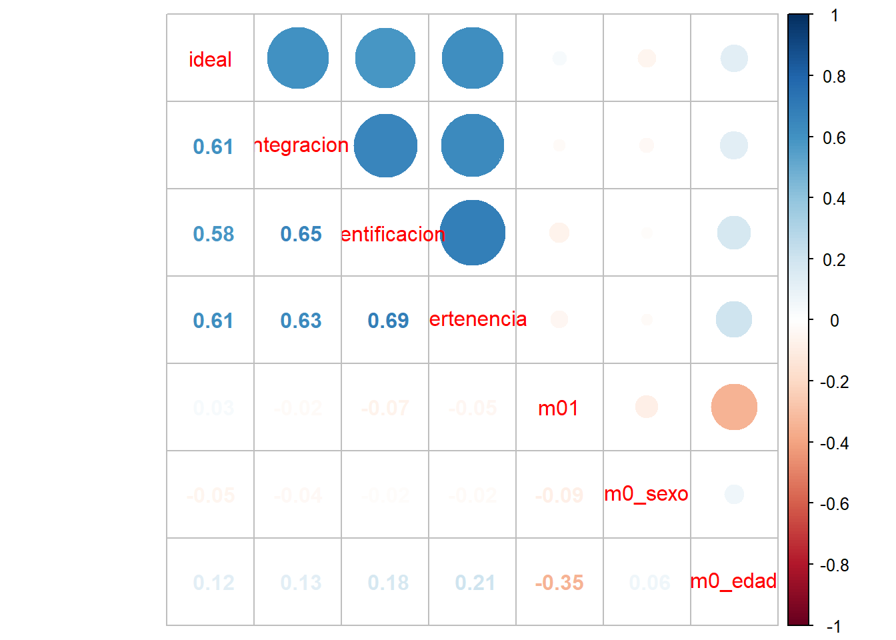

Código
pacman::p_load(dplyr, sjmisc, car, sjlabelled, stargazer, haven, sjPlot, ggplot2, psych)R data analisis
Como siempre, estas guías no apuntan a ser un paso a paso de lo que se debe hacer, sino que son un ejemplo concreto de cómo hacer ciertos tipos de análisis con un conjunto de datos determinados. Los procedimientos de limpieza van a depender siempre del conjunto de datos que utilicemos en nuestras investigaciones y el proceso de análisis va a depender de nuestros objetivos de investigación, en relación con las variables e hipótesis que queramos demostrar.
El desarrollo de esta guía tiene por objetivo revisar todos los contenidos trabajados hasta este momento del curso (07/05/2024). En términos generales, es un resumen de las cosas esenciales de los 7 prácticos anteriores como limpieza y preparación de datos, análisis descriptivo, bivariado y visualización de datos en Quarto y subida a github y visualización de github pages.
En concreto, un ejemplo del resultado final de un trabajo se debería poder visualizar así en un repositorio de github y en Github pages
Por temas de orden y reproducibilidad, en este curso hemos separado en dos momentos el trabajo con datos, y dos archivos de código correspondientes:
Preparación corresponde a lo que se conoce generalmente como “limpieza”, es decir, realizar las modificaciones necesarias para poder efectuar los análisis. Estas modificaciones previas al análisis son necesarias ya que los datos originales con los que se va a trabajar en general no vienen perfectamente adaptados a los análisis que se quieren hacer. Por lo tanto, en cuanto a datos también hacemos la distinción entre datos originales y datos preparados (o procesados). Este código de análisis lo podemos encontrar en la carpeta procesamiento del repositorio
Análisis: se relaciona tanto con análisis descriptivos asociados a las preguntas de investigación y como también modelamiento de datos para contrastar hipótesis de investigación. En este curso lo esencial es visualizar el análisis a través de quarto, por lo que el documento .qmd debería estar en el inicio del repositorio (junto al Rproject). Este documento se debe renderizar y obtenemos un archivo .html que se podría visualizar a través de github pages en, por ejemplo, el link: https://kevin-carrasco.github.io/ipo/trabajo.html. Dónde:

Vamos paso a paso

Tanto la preparación como el análisis (que son parte del concepto más general de procesamiento) quedan registrados cada uno en un archivo de código.
Archivo de código R: archivo con extensión .R donde se almacena el código de análisis. Para generarlo desde RStudio: File > New File > R Script (o ctrl+shift+N), y para grabarlo File > Save (o ctrl+s), y darle nombre la primera vez (recordar: sin tilde ni ñ, y evitar espacios)
El documento de código de preparación posee 5 partes, más una sección de identificación inicial:
De rutas, estructura de carpetas y otros
Encontrando la ruta a carpeta local: lo más fácil es crear la carpeta donde se desean guardar los datos desde el administrador de archivos del computador. Luego, posicionarse con el cursor sobre la carpeta y seleccionar “Propiedades”, en la ventana emergente debería aparecer la ruta hacia la carpeta en “Ubicación”. Copiar esa ruta y agregar al final el nombre de la carpeta (separada por slash)
Sobre los “slashes” (\ o /): en la ruta las carpetas y el archivo final aparecen separados por slashes, que según el sistema utilizado pueden ser slash (/) o backslash (\). En R por defecto se usa slash, pero en Windows backslash, por lo que si se usa Windows hay que reemplazarlos por backslash o también puede ser por un doble slash (//).
Por temas de compatibilidad general, en las rutas se recomienda evitar tildes, eñes, espacios, mayúsculas y guiones bajos (_).
Estructura de carpetas: para mantener el orden se sugiere seguir un protocolo de estructura de carpetas de proyecto, para lo que recomendamos el protocolo IPO, y que se adapta al flujo de trabajo presentado anteriormente. Básicamente son tres carpetas: input, procesamiento, output. En la carpeta input crear la subcarpeta data-orig para guardar datos originales, y data-proc para los procesados. En procesamiento se guardan los archivos de código y en output las tablas y los gráficos.

Nuestras carpetas se deberían ver así:

Donde lo primero que debemos hacer, siempre, es abrir el Rproject (.Rproj) para comenzar nuestro trabajo.
Cohesión barrial con elsoc 2016
pacman::p_load(dplyr, sjmisc, car, sjlabelled, stargazer, haven, sjPlot, ggplot2, psych)Ajustar espacio de trabajo
Previo a la carga de nuestra base de datos, se recomienda ejecutar los siguientes comandos:
rm(list=ls()) # borrar todos los objetos en el espacio de trabajo
options(scipen=999) # valores sin notación científicaLa función rm(list=ls()) permite comenzar con un espacio de trabajo (environment) vacío y sin otros objetos. Así también, la función options(scipen=999) desactiva la notación científica, es decir, veremos los valores numéricos con todos sus decimales.
Datos
Las bases de datos se pueden cargar de un archivo local o en línea. Para este caso utilizaremos un archivo en línea que viene en formato RData: elsoc.RData. Abrir bases de datos en otros formatos: Los formatos mas comunes en que se almacenan las bases de datos son .dta (Stata), .sav (Spss) y RData (R). Para abrir desde R utlilizamos la librería haven y sus funciones read_dta y read_sav según corresponda. Ej: datos <- read_dta("base_casen.dta"). Recordar antes instalar/cargar la librería: pacman::p_load(haven)
#cargamos la base de datos desde internet
load(url("https://dataverse.harvard.edu/api/access/datafile/7245118")) #Cargar base de datosRealizamos un chequeo básico de la lectura de datos: nombres de las variables y tamaño de la base en términos de casos y variables (en este ejemplo, 18035, 750 ).
dim(elsoc_long_2016_2022.2) # dimension de la base[1] 18035 750Este paso consiste en crear un subset reducido de datos que contenga solo las variables de interés. Para ello lo más fácil es revisar el libro de códigos de cada base de datos. Además filtramos por la ola 1 para trabajar solo con datos del 2016.
proc_data <- elsoc_long_2016_2022.2 %>% filter(ola=="1") %>%
select(t02_01, # Este barrio es ideal para mi
t02_02, # Me siento incluido en este barrio
t02_03, # Me identifico con la gente de este barrio
t02_04, # Este barrio es parte de mi
m01,# nivel educacional
m0_sexo,# sexo
m0_edad# edad
)
# Comprobar
names(proc_data)[1] "t02_01" "t02_02" "t02_03" "t02_04" "m01" "m0_sexo" "m0_edad"Mediante el comando get_label obtenemos el atributo label de las variables.
sjlabelled::get_label(proc_data) t02_01
"Grado de acuerdo: Este es el barrio ideal para mi"
t02_02
"Grado de acuerdo: Me siento integrado/a en este barrio"
t02_03
"Grado de acuerdo: Me identifico con la gente de este barrio"
t02_04
"Grado de acuerdo: Este barrio es parte de mi"
m01
"Nivel educacional"
m0_sexo
"Sexo del entrevistado"
m0_edad
"Edad del entrevistado" Podemos ver que son largas o con códigos poco informativos, por lo tanto, es necesario cambiarlas por etiquetas más cortas y de fácil identificación.
Para el procesamiento de cada variable se seguirá el siguiente flujo de trabajo:
Y se recomienda también un descriptivo final para revisar que el procesamiento de cada variable está ok.
a. Descriptivo
Para los descriptivos se utilizará la función frq, de la librería sjmisc:
frq(proc_data$t02_01)Grado de acuerdo: Este es el barrio ideal para mi (x) <numeric>
# total N=2927 valid N=2927 mean=3.31 sd=16.51
Value | Label | N | Raw % | Valid % | Cum. %
-------------------------------------------------------------------------------
-999 | No Responde | 0 | 0.00 | 0.00 | 0.00
-888 | No Sabe | 1 | 0.03 | 0.03 | 0.03
-777 | Valor perdido por error tecnico | 0 | 0.00 | 0.00 | 0.03
-666 | Valor perdido por encuesta incompleta | 0 | 0.00 | 0.00 | 0.03
1 | Totalmente en desacuerdo | 114 | 3.89 | 3.89 | 3.93
2 | En desacuerdo | 413 | 14.11 | 14.11 | 18.04
3 | Ni de acuerdo ni en desacuerdo | 379 | 12.95 | 12.95 | 30.99
4 | De acuerdo | 1599 | 54.63 | 54.63 | 85.62
5 | Totalmente de acuerdo | 421 | 14.38 | 14.38 | 100.00
<NA> | <NA> | 0 | 0.00 | <NA> | <NA>En esta variable vemos valores asociados a la opción “No contesta” (-999) y “No sabe” (-888), (-777) y (-666) que corresponde definirlos como casos perdidos (en el caso de R, como casos NA). El resto de los valores y etiquetas se encuentran en un orden correcto. Sin embargo, si queremos construir una escala, lo mejor es dejar los valores de 0 a 4
b. Recodificación
Después de revisar el libro de códigos, no hay variables en que los valores negativos representen alguna otra característica, así que podemos usar set_na
proc_data <- proc_data %>% set_na(., na = c(-999, -888, -777, -666))frq(proc_data$t02_01)Grado de acuerdo: Este es el barrio ideal para mi (x) <numeric>
# total N=2927 valid N=2926 mean=3.62 sd=1.02
Value | Label | N | Raw % | Valid % | Cum. %
------------------------------------------------------------------------
1 | Totalmente en desacuerdo | 114 | 3.89 | 3.90 | 3.90
2 | En desacuerdo | 413 | 14.11 | 14.11 | 18.01
3 | Ni de acuerdo ni en desacuerdo | 379 | 12.95 | 12.95 | 30.96
4 | De acuerdo | 1599 | 54.63 | 54.65 | 85.61
5 | Totalmente de acuerdo | 421 | 14.38 | 14.39 | 100.00
<NA> | <NA> | 1 | 0.03 | <NA> | <NA>Para reordenar las categorías volvemos a utilizar la función recode, de la librería car
proc_data$t02_01 <- recode(proc_data$t02_01, "1=0; 2=1; 3=2; 4=3; 5=4")
proc_data$t02_02 <- recode(proc_data$t02_02, "1=0; 2=1; 3=2; 4=3; 5=4")
proc_data$t02_03 <- recode(proc_data$t02_03, "1=0; 2=1; 3=2; 4=3; 5=4")
proc_data$t02_04 <- recode(proc_data$t02_04, "1=0; 2=1; 3=2; 4=3; 5=4")c - Etiquetado
Vamos a dar un nombre más sustantivo a las variables con la función rename, de la librería dplyr:
proc_data <- proc_data %>% rename("ideal"=t02_01,
"integracion"=t02_02,
"identificacion"=t02_03,
"pertenencia"=t02_04)Además de cambiar el nombre, queremos cambiar las etiquetas de las variables.
proc_data$ideal <- set_label(x = proc_data$ideal,label = "Este barrio es ideal para mi")
get_label(proc_data$ideal)[1] "Este barrio es ideal para mi"proc_data$integracion <- set_label(x = proc_data$integracion, label = "Me siento integrado en este barrio")
get_label(proc_data$integracion)[1] "Me siento integrado en este barrio"proc_data$identificacion <- set_label(x = proc_data$identificacion, label = "Me identifico con la gente de este barrio")
get_label(proc_data$identificacion)[1] "Me identifico con la gente de este barrio"proc_data$pertenencia <- set_label(x = proc_data$pertenencia, label = "Me siento parte de este barrio")
get_label(proc_data$pertenencia)[1] "Me siento parte de este barrio"Revisión final
Nuevamente un descriptivo de cada variable para confirmar que el procesamiento está ok:
frq(proc_data$ideal)Este barrio es ideal para mi (x) <numeric>
# total N=2927 valid N=2926 mean=2.62 sd=1.02
Value | Label | N | Raw % | Valid % | Cum. %
------------------------------------------------------------------------
0 | 0 | 114 | 3.89 | 3.90 | 3.90
1 | Totalmente en desacuerdo | 413 | 14.11 | 14.11 | 18.01
2 | En desacuerdo | 379 | 12.95 | 12.95 | 30.96
3 | Ni de acuerdo ni en desacuerdo | 1599 | 54.63 | 54.65 | 85.61
4 | De acuerdo | 421 | 14.38 | 14.39 | 100.00
5 | Totalmente de acuerdo | 0 | 0.00 | 0.00 | 100.00
<NA> | <NA> | 1 | 0.03 | <NA> | <NA>frq(proc_data$integracion)Me siento integrado en este barrio (x) <numeric>
# total N=2927 valid N=2923 mean=2.57 sd=1.00
Value | Label | N | Raw % | Valid % | Cum. %
------------------------------------------------------------------------
0 | 0 | 109 | 3.72 | 3.73 | 3.73
1 | Totalmente en desacuerdo | 436 | 14.90 | 14.92 | 18.65
2 | En desacuerdo | 408 | 13.94 | 13.96 | 32.60
3 | Ni de acuerdo ni en desacuerdo | 1633 | 55.79 | 55.87 | 88.47
4 | De acuerdo | 337 | 11.51 | 11.53 | 100.00
5 | Totalmente de acuerdo | 0 | 0.00 | 0.00 | 100.00
<NA> | <NA> | 4 | 0.14 | <NA> | <NA>frq(proc_data$identificacion)Me identifico con la gente de este barrio (x) <numeric>
# total N=2927 valid N=2923 mean=2.52 sd=0.99
Value | Label | N | Raw % | Valid % | Cum. %
------------------------------------------------------------------------
0 | 0 | 106 | 3.62 | 3.63 | 3.63
1 | Totalmente en desacuerdo | 453 | 15.48 | 15.50 | 19.12
2 | En desacuerdo | 460 | 15.72 | 15.74 | 34.86
3 | Ni de acuerdo ni en desacuerdo | 1612 | 55.07 | 55.15 | 90.01
4 | De acuerdo | 292 | 9.98 | 9.99 | 100.00
5 | Totalmente de acuerdo | 0 | 0.00 | 0.00 | 100.00
<NA> | <NA> | 4 | 0.14 | <NA> | <NA>frq(proc_data$pertenencia)Me siento parte de este barrio (x) <numeric>
# total N=2927 valid N=2925 mean=2.63 sd=0.99
Value | Label | N | Raw % | Valid % | Cum. %
------------------------------------------------------------------------
0 | 0 | 91 | 3.11 | 3.11 | 3.11
1 | Totalmente en desacuerdo | 422 | 14.42 | 14.43 | 17.54
2 | En desacuerdo | 362 | 12.37 | 12.38 | 29.91
3 | Ni de acuerdo ni en desacuerdo | 1660 | 56.71 | 56.75 | 86.67
4 | De acuerdo | 390 | 13.32 | 13.33 | 100.00
5 | Totalmente de acuerdo | 0 | 0.00 | 0.00 | 100.00
<NA> | <NA> | 2 | 0.07 | <NA> | <NA>Vemos que los valores (labels) de cada categoría de las variables que recodificamos no se corresponden con el nuevo valor. Para re-etiquetar valores usamos la función set_labels, de la librería sjlabelled
proc_data$ideal <- set_labels(proc_data$ideal,
labels=c( "Totalmente en desacuerdo"=0,
"En desacuerdo"=1,
"Ni de acuerdo ni en desacuerdo"=2,
"De acuerdo"=3,
"Totalmente de acuerdo"=4))
proc_data$integracion <- set_labels(proc_data$integracion,
labels=c( "Totalmente en desacuerdo"=0,
"En desacuerdo"=1,
"Ni de acuerdo ni en desacuerdo"=2,
"De acuerdo"=3,
"Totalmente de acuerdo"=4))
proc_data$identificacion <- set_labels(proc_data$identificacion,
labels=c( "Totalmente en desacuerdo"=0,
"En desacuerdo"=1,
"Ni de acuerdo ni en desacuerdo"=2,
"De acuerdo"=3,
"Totalmente de acuerdo"=4))
proc_data$pertenencia <- set_labels(proc_data$pertenencia,
labels=c( "Totalmente en desacuerdo"=0,
"En desacuerdo"=1,
"Ni de acuerdo ni en desacuerdo"=2,
"De acuerdo"=3,
"Totalmente de acuerdo"=4))y volvemos a revisar
frq(proc_data$ideal)Este barrio es ideal para mi (x) <numeric>
# total N=2927 valid N=2926 mean=2.62 sd=1.02
Value | Label | N | Raw % | Valid % | Cum. %
------------------------------------------------------------------------
0 | Totalmente en desacuerdo | 114 | 3.89 | 3.90 | 3.90
1 | En desacuerdo | 413 | 14.11 | 14.11 | 18.01
2 | Ni de acuerdo ni en desacuerdo | 379 | 12.95 | 12.95 | 30.96
3 | De acuerdo | 1599 | 54.63 | 54.65 | 85.61
4 | Totalmente de acuerdo | 421 | 14.38 | 14.39 | 100.00
<NA> | <NA> | 1 | 0.03 | <NA> | <NA>frq(proc_data$pertenencia)Me siento parte de este barrio (x) <numeric>
# total N=2927 valid N=2925 mean=2.63 sd=0.99
Value | Label | N | Raw % | Valid % | Cum. %
------------------------------------------------------------------------
0 | Totalmente en desacuerdo | 91 | 3.11 | 3.11 | 3.11
1 | En desacuerdo | 422 | 14.42 | 14.43 | 17.54
2 | Ni de acuerdo ni en desacuerdo | 362 | 12.37 | 12.38 | 29.91
3 | De acuerdo | 1660 | 56.71 | 56.75 | 86.67
4 | Totalmente de acuerdo | 390 | 13.32 | 13.33 | 100.00
<NA> | <NA> | 2 | 0.07 | <NA> | <NA>m01] = Nivel de estudios alcanzado - Entrevistadoa. Descriptivo
frq(proc_data$m01)Nivel educacional (x) <numeric>
# total N=2927 valid N=2925 mean=5.26 sd=2.20
Value | Label | N | Raw % | Valid % | Cum. %
------------------------------------------------------------------------------------
1 | Sin estudios | 37 | 1.26 | 1.26 | 1.26
2 | Educacion Basica o Preparatoria incompleta | 322 | 11.00 | 11.01 | 12.27
3 | Educacion Basica o Preparatoria completa | 297 | 10.15 | 10.15 | 22.43
4 | Educacion Media o Humanidades incompleta | 394 | 13.46 | 13.47 | 35.90
5 | Educacion Media o Humanidades completa | 857 | 29.28 | 29.30 | 65.20
6 | Tecnica Superior incompleta | 102 | 3.48 | 3.49 | 68.68
7 | Tecnica Superior completa | 381 | 13.02 | 13.03 | 81.71
8 | Universitaria incompleta | 186 | 6.35 | 6.36 | 88.07
9 | Universitaria completa | 303 | 10.35 | 10.36 | 98.43
10 | Estudios de posgrado (magister o doctorado) | 46 | 1.57 | 1.57 | 100.00
<NA> | <NA> | 2 | 0.07 | <NA> | <NA>Esta vez la vamos a dejar así
m0_sexo] = SEXO Sexoa. Descriptivo
frq(proc_data$m0_sexo)Sexo del entrevistado (x) <numeric>
# total N=2927 valid N=2927 mean=1.60 sd=0.49
Value | Label | N | Raw % | Valid % | Cum. %
------------------------------------------------
1 | Hombre | 1163 | 39.73 | 39.73 | 39.73
2 | Mujer | 1764 | 60.27 | 60.27 | 100.00
<NA> | <NA> | 0 | 0.00 | <NA> | <NA>m0_edad] = EDAD Edad.a. Descriptivo
summary(proc_data$m0_edad) Min. 1st Qu. Median Mean 3rd Qu. Max.
18.00 33.00 46.00 46.09 58.00 88.00 Antes de guardar la base procesada, revisamos nuevamente todas las variables con una tabla descriptiva general mediante la función stargazer (de la librería homónima)
Primero vamos a reformatear el objeto proc_data como base de datos (as.data.frame), paso necesario para que sea reconocido como tal por stargazer
proc_data <-as.data.frame(proc_data)
stargazer(proc_data, type="text")
============================================
Statistic N Mean St. Dev. Min Max
--------------------------------------------
ideal 2,926 2.615 1.020 0 4
integracion 2,923 2.566 0.999 0 4
identificacion 2,923 2.524 0.988 0 4
pertenencia 2,925 2.628 0.988 0 4
m01 2,925 5.261 2.202 1 10
m0_sexo 2,927 1.603 0.489 1 2
m0_edad 2,927 46.091 15.287 18 88
--------------------------------------------El comando para guardar es save:
save(proc_data,file = "[ruta hacia carpeta local en su computador]/ELSOC_ess_merit2016.RData")En este caso, seguimos una estructura de carpetas de datos, separando en una carpeta los datos originales, y en otra (proc) los datos procesados:
save(proc_data,file = "input/data/elsoc2016_proc.RData")Una vez que tenemos recodificadas nuestras variables en el archivo de preparación y logramos exportar la base de datos procesada en la carpeta input/data, abrimos un documento de quarto (.qmd) para realizar el análisis.
Al trabajar con quarto (y al intentar renderizar), el documento leerá todos lo que esté escrito en el documento desde 0, por lo que es necesario siempre cargar de nuevo los paquetes y bases de datos.
Primero cargamos los paquetes:
pacman::p_load(dplyr, sjmisc, car, sjlabelled, stargazer, haven, sjPlot, ggplot2, psych, kableExtra, corrplot)y la base procesada
load("input/data/elsoc2016_proc.RData")sjmisc::descr(proc_data,
show = c("label","range", "mean", "sd", "NA.prc", "n"))%>% # Selecciona estadísticos
kable(.,"markdown") # Esto es para que se vea bien en quarto| var | label | n | NA.prc | mean | sd | range | |
|---|---|---|---|---|---|---|---|
| 1 | ideal | Este barrio es ideal para mi | 2926 | 0.0341647 | 2.615174 | 1.0202541 | 4 (0-4) |
| 3 | integracion | Me siento integrado en este barrio | 2923 | 0.1366587 | 2.565515 | 0.9993502 | 4 (0-4) |
| 2 | identificacion | Me identifico con la gente de este barrio | 2923 | 0.1366587 | 2.523777 | 0.9884856 | 4 (0-4) |
| 7 | pertenencia | Me siento parte de este barrio | 2925 | 0.0683293 | 2.627692 | 0.9878809 | 4 (0-4) |
| 4 | m01 | Nivel educacional | 2925 | 0.0683293 | 5.260513 | 2.2015019 | 9 (1-10) |
| 6 | m0_sexo | Sexo del entrevistado | 2927 | 0.0000000 | 1.602665 | 0.4894300 | 1 (1-2) |
| 5 | m0_edad | Edad del entrevistado | 2927 | 0.0000000 | 46.090878 | 15.2867983 | 70 (18-88) |
En la Tabla 1 podemos observar los descriptivos generales de la base de datos procesada.
Y si queremos visualizar algo más:
proc_data %>% dplyr::select(ideal, integracion, identificacion, pertenencia) %>%
sjPlot::plot_stackfrq()+
theme(legend.position = "bottom")En la Figura 1 podemos ver la distribución de las variables de cohesión barrial, donde se puede observar que más del 65% de la muestra está de acuerdo o totalmente de acuerdo con las afirmaciones indicadas.
Podemos ver la asociación de todas las variables, como lo muestra la ?@cor-complete
M <- cor(proc_data, use = "complete.obs") # Usar solo casos con observaciones completascorrplot.mixed(M)
o podemos ver específicamente la asociación de las variables de cohesión barrial
M2 <- cor(dplyr::select(proc_data, ideal, integracion, identificacion, pertenencia), use = "complete.obs")
corrplot.mixed(M2)
La Figura 2 muestra que la asociación de las cuatro variables de cohesión barrial es alta y positiva, según Cohen (1998). En general el tamaño de efecto varía entre 0.58 la más baja y 0.69 la más alta.
psych::alpha(dplyr::select(proc_data, ideal, integracion, identificacion, pertenencia))
Reliability analysis
Call: psych::alpha(x = dplyr::select(proc_data, ideal, integracion,
identificacion, pertenencia))
raw_alpha std.alpha G6(smc) average_r S/N ase mean sd median_r
0.87 0.87 0.84 0.63 6.8 0.0039 2.6 0.85 0.62
95% confidence boundaries
lower alpha upper
Feldt 0.86 0.87 0.88
Duhachek 0.86 0.87 0.88
Reliability if an item is dropped:
raw_alpha std.alpha G6(smc) average_r S/N alpha se var.r med.r
ideal 0.85 0.85 0.80 0.66 5.8 0.0047 0.00086 0.65
integracion 0.84 0.84 0.78 0.63 5.1 0.0053 0.00299 0.61
identificacion 0.83 0.83 0.76 0.62 4.9 0.0055 0.00015 0.61
pertenencia 0.83 0.83 0.76 0.62 4.8 0.0055 0.00121 0.61
Item statistics
n raw.r std.r r.cor r.drop mean sd
ideal 2926 0.83 0.83 0.73 0.69 2.6 1.02
integracion 2923 0.85 0.85 0.78 0.73 2.6 1.00
identificacion 2923 0.86 0.86 0.80 0.74 2.5 0.99
pertenencia 2925 0.86 0.86 0.80 0.75 2.6 0.99
Non missing response frequency for each item
0 1 2 3 4 miss
ideal 0.04 0.14 0.13 0.55 0.14 0
integracion 0.04 0.15 0.14 0.56 0.12 0
identificacion 0.04 0.15 0.16 0.55 0.10 0
pertenencia 0.03 0.14 0.12 0.57 0.13 0La consistencia interna de una posible escala entre estos cuatro ítems es de 0.87, lo que representa una alta consistencia interna. Si quitaramos alguno de estos ítems la consistencia interna solo bajaría, así que podemos construir una escala con los cuatro ítems.
proc_data <- proc_data %>%
rowwise() %>%
mutate(cohesion_barrial = sum(ideal, integracion, identificacion, pertenencia))
summary(proc_data$cohesion_barrial) Min. 1st Qu. Median Mean 3rd Qu. Max. NA's
0.00 8.00 12.00 10.33 12.00 16.00 10 y la podemos visualizar en un gráfico:
ggplot(proc_data, aes(x = cohesion_barrial)) +
geom_histogram(binwidth=0.6, colour="black", fill="yellow") +
theme_bw() +
xlab("Cohesión barrial") +
ylab("Cantidad")Warning: Removed 10 rows containing non-finite values (`stat_bin()`).
La Figura 3 muestra la distribución de la nueva escala de Cohesión Barrial que construimos. En general, la mayor concentración de casos está en la categoría 12 y que sumado a un promedio de 10.33 según los descriptivos anteriores, podríamos afirmar que la cohesión barrial en Chile es alta.
Una vez que tenemos nuestro cambios hechos, vamos a Github desktop y seguimos los siguientes pasos: